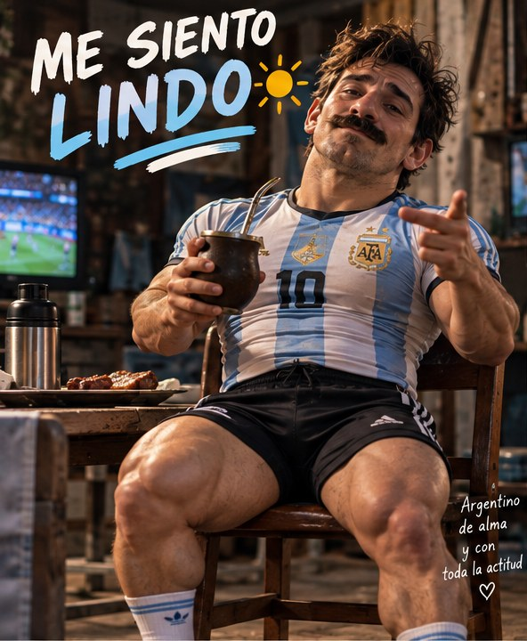
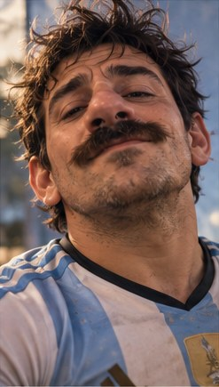
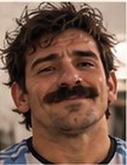
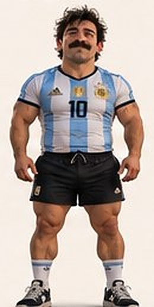
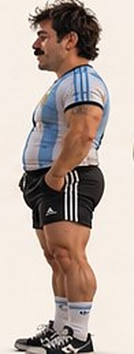
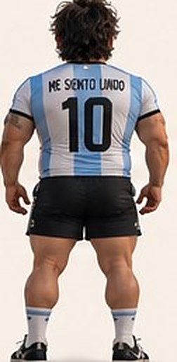

¡Me siento lindo!
Argentino de alma y con toda la actitud. Mate en la mano, asado en el fuego y la mejor onda.


Se siente lindo y lo comparte
MessiEn ToBien es un influencer virtual con una sola misión: sentirse lindo todos los días y contagiarlo. Con la camiseta puesta, el mate en la mano y el asado en el fuego, no hay lunes que le gane.
Acá vas a ver su día a día, sus gestos de siempre y toda la buena onda que trae. Pasá, mirá y quedate un rato.
Argentino de alma y con toda la actitud ♥Medidor de lindura
Tocá el botón cada vez que te sientas lindo. Sin límite.
Tu cuenta se guarda solo en tu navegador.
Sus caras de siempre
Elegí una expresión y mirá qué dice.

¡Hoy salió todo redondo!
Mirálo de todos lados
De frente, de lado y de espalda, siempre con el 10 puesto.



Un día con MessiEn
Mate, asado, moto, perro y gimnasio. Así pasa sus horas.
Seguilo
Muy pronto vas a encontrar acá sus redes.